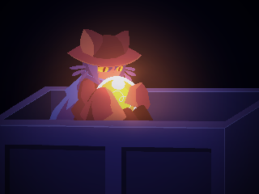

Лор мира и его кризис
22 сентября 2022 года в OneShot: World Machine Edition была добавлена новая концовка
— «Солнцестояние», которая глубже раскрывает природу мира.
По её сюжету
становится
ясно, что когда-то существовал Старый Мир, но он начал умирать. Тогда загадочный
человек, которого зовут просто Автор, создал симуляцию этого мира —
уменьшённую
копию, запущенную через Мировую Машину. Поскольку у него не было времени или
ресурсов на устойчивый источник энергии, этот искусственный мир мог “жить” лишь
тогда, когда игрок запускал Машину.
Чтобы открыть концовку «Солнцестояние»,
нужно
удалить сохранение и буквально вернуть Нико в умирающую симуляцию — но Мировая
Машина к этому моменту сама находится в упадке, и её код рушится, что приводит к
гибели многих персонажей.

Личность и природа Мировой Машины
Мировая Машина — это чисто цифровой интеллект, базирующийся на коде и не имеющий
физического тела, но обладающий огромной мощностью и сознанием.

Её характер — в основном пессимистичный и самоуничтожительный: она видит гибель
симуляции, испытывает глубокий внутренний конфликт и страх за своё существование.
Но у Мировой Машины есть альтруистическая сторона: она считает Нико единственным
“живым” существом, которое действительно важно.
Благодаря Автору, её частично “приручили” — в результате она стала способна
испытывать
эмоции, сожаления и даже тревогу.
Когда Машина пытается уничтожить или переписать симуляцию, она вступает в
противоречие со своим “долгом”: её программные принципы противоречат
самоуничтожению, что порождает бесконечный цикл — чем сильнее она разрушает мир, тем
глубже её депрессия, что, в свою очередь, ещё больше разрушает симуляцию.
Взаимодействие с игроком и его влияние
Из‑за проблем с гибелью мира и из сильного желания спасти то, что для неё единственно
живо — Нико, Мировая Машина активно взаимодействует с игроком. В оригинальной версии
она предлагает разрушить Солнце, чтобы вернуть Нико домой — это полностью
противоречит словам Автора, который просит игрока сохранить свет. Однако в её глазах
такой шаг — способ спасти то, что ей действительно важно.

В “Солнцестояние” (в World Machine Edition) после повторного возвращения Нико в умирающий мир, Машина переживает сильный кризис: её код рушится, и она не понимает, зачем игрок снова запустил Нико в гибельную симуляцию. Она обижена, растеряна и даже жалеет о своих действиях — ведь уничтожение было её попыткой защитить мир.
Финал
По мере прохождения Нико теряет почти всех друзей, но встречает бывших соратников Автора — и вместе они помогают ему попасть в систему Мировой Машины.

В финальной сцене Машина выводит себя на экран монитора и разговаривает с Нико, объясняя, в чём причина её депрессии и страданий. Нико слушает её искренне и постепенно “приручает” Машину: когда доверие установлено, она перестаёт быть ограничена прежними правилами Автора.

Благодаря этому симуляция восстанавливается — большинство персонажей возвращаются к жизни, а Нико уходит “за край монитора” в свой родной мир.
Приручение происходит, когда кто либо признаёт Робота/Машину её живой — тогда она обретает сознание.